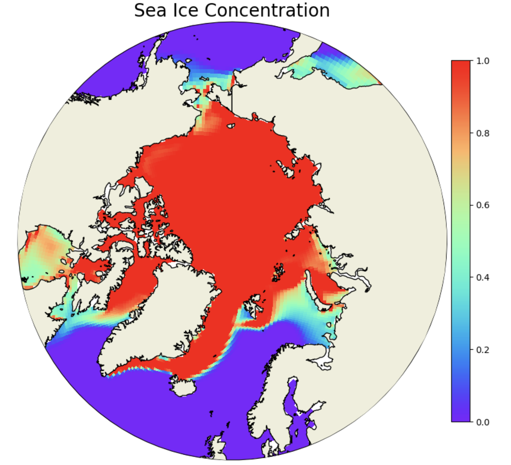
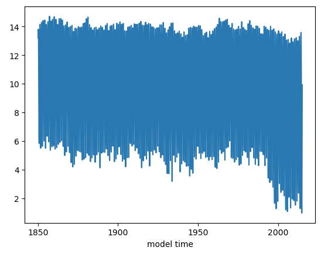
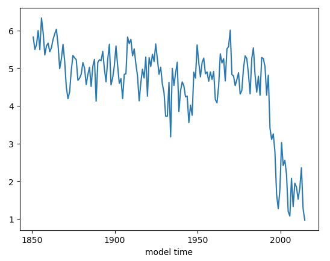
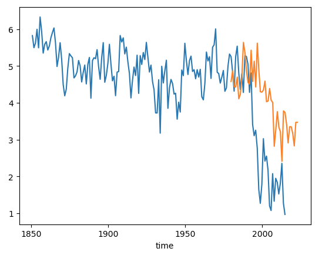

Basic Plotting#
BEFORE BEGINNING THIS EXERCISE - Check that your kernel (upper right corner, above) is NPL 2023a. This should be the default kernel, but if it is not, click on that button and select NPL 2023a.
This activity was developed primarily by David Bailey and Alice DuVivier.
These are examples of typical variables and plots that we look at in our sea ice diagnostics package. The most current version of the sea ice diagnostics are in the CESM Postprocessing. More information can be found here: CESM Postprocessing.
The first step is to import the libraries needed to plot the data. Here we will use xarray as a tool to read the netCDF file. We will use numpy for some basic math calculations. For plotting the data we will need matplotlib, pop_tools, geocat and cartopy.
import xarray as xr
import numpy as np
import matplotlib.pyplot as plt
import matplotlib.path as mpath
from matplotlib.gridspec import GridSpec
import pop_tools
import cartopy.crs as ccrs
import cartopy.feature as cfeature
import nc_time_axis
import cftime
import os
Exercise 1: Plot Sea Ice Concentration on a polar projection.#
Here you will learn about plotting sea ice area and other variables on a polar projection.
The first step is to grab sea ice (CICE) history files from your CESM model run
# Set your username here:
username = "PUT_USER_NAME_HERE"
# Here we point to the archive directory from your b.day2.1 simulation
monthly_output_path = f"/glade/scratch/{username}/archive/b.day2.1/ice/hist"
# If you were unable to successfully run the b.day2.1 simulation, then feel free to use
# this provided simulation data instead:
monthly_output_path = "/glade/p/cesm/tutorial/tutorial_2023_archive/b.day2.1/ice/hist"
# Name of CESM run
run_name = "b.day2.1"
# Create path to all files, including unix wild card for all dates
files = os.path.join(monthly_output_path, run_name + ".cice.h.*")
# read in files as an xarray dataset:
ds = xr.open_mfdataset(files)
### For this analysis, choose which variable to keep. Start with `aice` and then later try `hi`
#var_in = 'aice' # sea ice concentration
var_in = 'hi' # sea ice thickness
var_to_keep = ds[var_in]
print(var_to_keep)
<xarray.DataArray 'hi' (time: 40, nj: 384, ni: 320)>
dask.array<concatenate, shape=(40, 384, 320), dtype=float32, chunksize=(1, 384, 320), chunktype=numpy.ndarray>
Coordinates:
* time (time) object 0001-02-01 00:00:00 ... 0004-05-01 00:00:00
TLON (nj, ni) float32 dask.array<chunksize=(384, 320), meta=np.ndarray>
TLAT (nj, ni) float32 dask.array<chunksize=(384, 320), meta=np.ndarray>
ULON (nj, ni) float32 dask.array<chunksize=(384, 320), meta=np.ndarray>
ULAT (nj, ni) float32 dask.array<chunksize=(384, 320), meta=np.ndarray>
Dimensions without coordinates: nj, ni
Attributes:
units: m
long_name: grid cell mean ice thickness
cell_measures: area: tarea
cell_methods: time: mean
time_rep: averaged
The next step is to read in some grid information for the gx1v7 dipole grid used in POP and CICE. We will read in three main variables: tarea, TLAT, and TLON. These are the areas of the gridcells along with the latitudes and longitudes of the gridcell centers. Also, we will print the longitude array TLONG to see the metadata.
# get pop grid grid cell areas
grid = pop_tools.get_grid('POP_gx1v7')
# convert tarea to m^2
with xr.set_options(keep_attrs=True):
grid['TAREA'] = grid['TAREA']/(1e4)
grid['TAREA'].attrs['units'] = 'm^2'
grid
grid['TLONG']
We will merge in three main variables: TAREA, TLAT, and TLON. These are the areas of the gridcells along with the latitudes and longitudes of the gridcell centers. Note that this overwrites the dataset object from above.
ds = xr.merge([var_to_keep.drop(['TLAT', 'TLON', 'ULAT', 'ULON']),
grid[['TLAT', 'TLONG', 'TAREA']].rename_dims({'nlat':'nj','nlon':'ni'})],
compat='identical', combine_attrs='no_conflicts')
grid['TLAT']
The next step is to set up the northern hemisphere polar stereographic projection for plotting the sea ice variable. We start with sea ice concentration aice. We are using a “rainbow” colormap here and cutting off the plot with a circular boundary. Note that we are only plotting the first timeslice of the aice array here.
# make circular boundary for polar stereographic circular plots
theta = np.linspace(0, 2*np.pi, 100)
center, radius = [0.5, 0.5], 0.5
verts = np.vstack([np.sin(theta), np.cos(theta)]).T
circle = mpath.Path(verts * radius + center)
# define the colormap
cmap = plt.cm.get_cmap('rainbow')
# set up the figure with a North Polar Stereographic projection
fig = plt.figure(figsize=(20,20))
ax = fig.add_subplot(1,2,1, projection=ccrs.NorthPolarStereo())
ax.set_boundary(circle, transform=ax.transAxes)
ax.add_feature(cfeature.LAND,zorder=100,edgecolor='k')
# sets the latitude / longitude boundaries of the plot
ax.set_extent([0.005, 360, 90, 55], crs=ccrs.PlateCarree())
#Plot the first timeslice of aice
this=ax.pcolormesh(ds['TLONG'],
ds['TLAT'],
ds[var_in].isel(time=0).squeeze(),
cmap=cmap,vmax=1,vmin=0,
transform=ccrs.PlateCarree())
plt.colorbar(this,orientation='vertical',fraction=0.04,pad=0.01)
plt.title('Sea Ice Concentration',fontsize=20)
Click here for the solution

Figure: Plotting solution.
Question:
Why is the scale from 0-1 for aice?
Click here for hints
The variable aice is actually ice fraction. To convert it to concentration you would need to multipy it by 100. In the rest of these notebooks we use the ice fraction fairly interchangeably with ice concentration. But if you are plotting these you should check your range and see if the maximum value is 1 or 100 because that’s important for setting colorbar limits.
Question:
What month did you plot above? How could you plot the September ice concentration? (Remember that the monthly files are written at the last timestep of the month, so the June files are written out on July 1 at 00Z).
Click here for hints
You can check the date plotted by using the following command.
ds['aice'].isel(time=0).time
You should see that the date is Feb.1 of year 1 at 00Z. Which means it is the January mean sea ice concentration. To plot the September mean sea ice concentration, use the timeslice time=8.
Question:
What do you think of that rainbow colormap? Try other colormaps like viridis, plasma, Blues. Note that if you add the string _r to the colormap name it will reverse the colormap. What is a more intutitive map for plotting sea ice concentration?
Click here for hints
We think the reversed Blues colormap is more intuitive.
cmap = plt.cm.get_cmap('Blues_r')
Question:
Can you plot the annual mean over the data? What about computing the September mean over the data and plotting that?
Click here for hints
Try entering the following data to plot in the pcolormesh function.
ds['aice'].mean(dim='time').squeeze(),
Question:
You have plotted the sea ice concentration (aice), now try plotting the thickness (hi). Note that the units of thickness are in meters, so think about how you should adjust the colorbar range to be sensible? Note that you will have to change the var_in at the top of this section.
Click here for hints
After selecting var_in = hi, run through the following cells. Then check different ranges for vmax that might make more sense for the sea ice thickness (e.g. vmax=5)
Question:
All of the previous plots were of the Northern Hemisphere. How would you plot the Southern Hemisphere? How might you want to consider the seasonality if you’re looking at Antarctic sea ice?
Click here for hints
Use the following to plot the Southern Hemisphere
ax = fig.add_subplot(1,2,1, projection=ccrs.SouthPolarStereo())
ax.set_extent([0.005, 360, -90, -55], crs=ccrs.PlateCarree())
Exercise 2: Plot a time series of total sea ice area.#
The next few steps read in sea ice concentration or (aice) from one of the CESM2 large ensemble historical runs. Note this operation points to multiple files on the campaign file system, so we are using the xarray function open_mfdataset for a multifile dataset. We will also print the aice dataset to get an idea of the metadata and dimensions. Note that we could use the 10 year simulation from the tutorial. Note that we could use the output from the tutorial simulations. However, those runs are very short and thus are not a very interesting timeseries. Instead we can use one of the CESM2 Large Ensemble historical simulations. Rodgers et al. 2021
# First remove the old 'ds' variable:
del ds
### Here we point to the CESM2-LE datasets on campaign disk
monthly_output_path = "/glade/campaign/cgd/cesm/CESM2-LE/ice/proc/tseries/month_1"
run_name = "b.e21.BHISTcmip6.f09_g17.LE2-1001.001"
### For this we will use the sea ice concentration (aice) and ice thickness (hi)
var_names = ['aice',
'hi',
]
### This piece of code opens the files and combines them into a single xarray dataset
da_list = []
for var_name in var_names:
files = os.path.join(monthly_output_path, var_name,
run_name + ".cice.h." + var_name + ".*")
ds_in = xr.open_mfdataset(files)
da_list.append(ds_in[var_name])
del ds_in
ds = xr.merge(da_list)
del da_list
aice = ds['aice']
print(aice)
The next step is to read in some grid information for the gx1v7 dipole grid used in POP and CICE. We will read in three main variables: TAREA, TLAT, and TLON. These are the areas of the gridcells along with the latitudes and longitudes of the gridcell centers. Also, we will print the area array TAREA to see the metadata.
# get pop grid grid cell areas
grid = pop_tools.get_grid('POP_gx1v7')
# convert tarea to m^2
with xr.set_options(keep_attrs=True):
grid['TAREA'] = grid['TAREA']/(1e4)
grid['TAREA'].attrs['units'] = 'm^2'
grid
grid['TAREA']
We will merge in three main variables: TAREA, TLAT, and TLON. These are the areas of the gridcells along with the latitudes and longitudes of the gridcell centers. Note that this overwrites the dataset object from above.
ds = xr.merge([aice.drop(['TLAT', 'TLON', 'ULAT', 'ULON']),
grid[['TLAT', 'TLONG', 'TAREA']].rename_dims({'nlat':'nj','nlon':'ni'})],
compat='identical', combine_attrs='no_conflicts')
grid['TLAT']
The next step is to compute the ice area in each grid cell by multiplying the grid cell areas by the ice area fraction. Then we subset to just grid cells in the Northern hemisphere (using where). Finally, we sum over all of the grid cells. We can do these operations in a single line:
ds_area = (ds.TAREA*ds.aice).where(ds.TLAT>0).sum(dim=['nj','ni'])
ds_area.plot()
Click here for the solution

Figure: Plotting solution.
This plot looks very noisy! Why do you think this is? Hint: you have plotted how many years of monthly mean data? Let’s try just plotting September instead.
Question: Why do we use month 10 (ds_area.time.dt.month.isin([10])) to reference September data?
ds_area.sel(time=ds_area.time.dt.month.isin([10])).plot()
Click here for the solution

Figure: Plotting solution.
Now let’s plot the observational data on top. The NSIDC Sea Ice Index will be the values we want. These are computed from satellite observations. More information can be found here Sea Ice Index.
##### Add the data values manually from the datafile.
##### Create an xarray object with the NSIDC values and the years from 1979 to 2022.
seaice_index = [4.58,4.87,4.44,4.43,4.7,4.11,4.23,4.72,5.64,5.36,4.86,4.55,4.51,5.43,4.58,5.13,4.43,5.62,\
4.89,4.3,4.29,4.35,4.59,4.03,4.05,4.39,4.07,4.01,2.82,3.26,3.76,3.34,3.21,2.41,3.78,3.74,\
3.42,2.91,3.35,3.35,3.17,2.83,3.47,3.47]
# Convert to m^2
seaice_index = np.array(seaice_index)
seaice_index *= 1e12
nsidc_time = [cftime.datetime(y, 10, 15) for y in range(1979,2023)]
nsidc_index = xr.DataArray(data=seaice_index,coords={"time":nsidc_time})
nsidc_index
ds_area.sel(time=ds_area.time.dt.month.isin([10])).plot()
nsidc_index.plot()
Click here for the solution

Figure: Plotting solution.
Question:
Why do you think the observed (orange) does not perfectly correspond to the model?
Click here for hints
The model is one of 100 ensemble realizations of the 20th century and evolves independently, meaning each simulation has different weather and that weather will almost certainly be different from the observations. It will not, and should not, exactly match the observations because the climate system is chaotic.
Question:
What do you think you’ll see if you plot the March total area timeseries?
Click here for hints
March total area.
ds_area.sel(time=ds_area.time.dt.month.isin([4])).plot()
This should be higher mean and have a negative, but smaller, trend than the September trend.
Question:
Try computing total ice volume and plotting it.
Click here for hints
To calculate ice volume, use the variable hi in place of aice. Note that volume is units of \(m^3\). So, you might want to scale the volume by \(1.0e-13\).
ds_vol = (ds.TAREA*ds.hi).where(ds.TLAT>0).sum(dim=['nj','ni'])
Question:
What does the Southern Hemisphere sea ice area and volume look like?
Click here for hints
To calculate the Southern Hemisphere total area or volume, set the following values so that you only include points where the latitude is less than zero.
ds_area = (ds.TAREA*ds.aice).where(ds.TLAT<0).sum(dim=['nj','ni'])